THE THREE MAJOR DATA TYPES
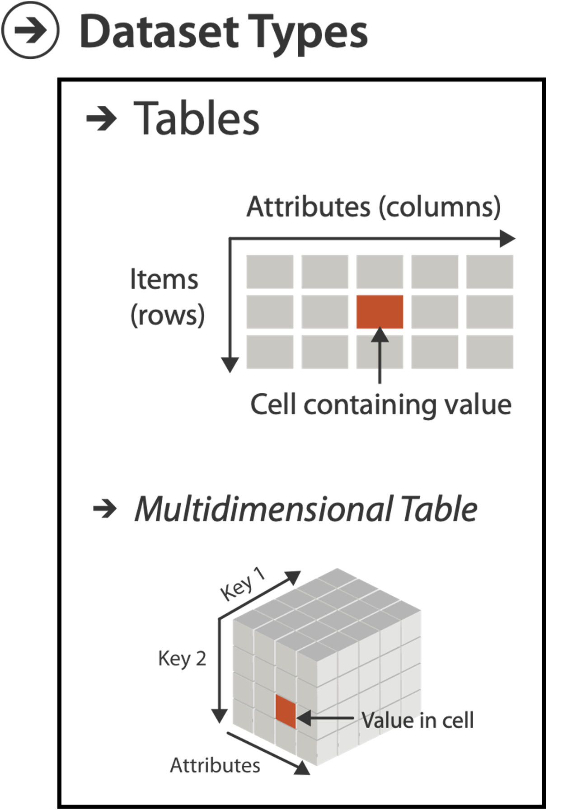

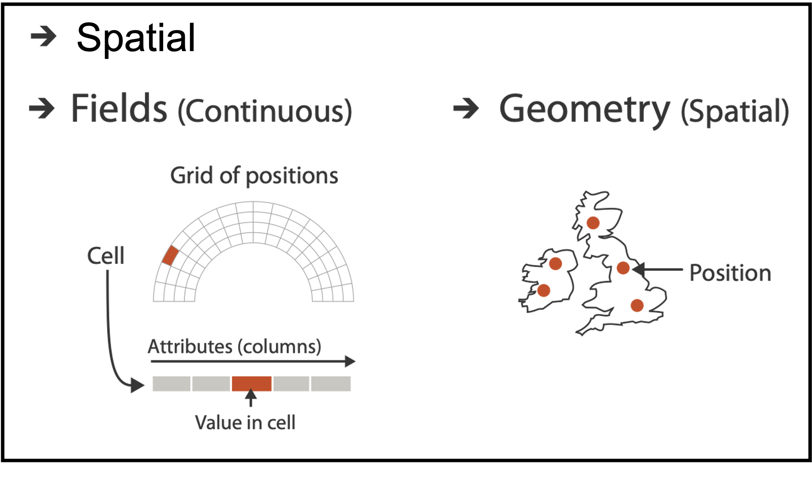
WHAT?
Computer-based visualization systems provide visual representations of datasets designed to help people carry out tasks more effectively.


SEMANTICS FOR DATA
Semantics
- item: individual entity, discrete
- eg patient, car, stock, city
- “independent variable”
- attribute: property that is measured, observed, logged…
- eg height, blood pressure for patient
- eg horsepower, make for car
- “dependent variable”
Data Table
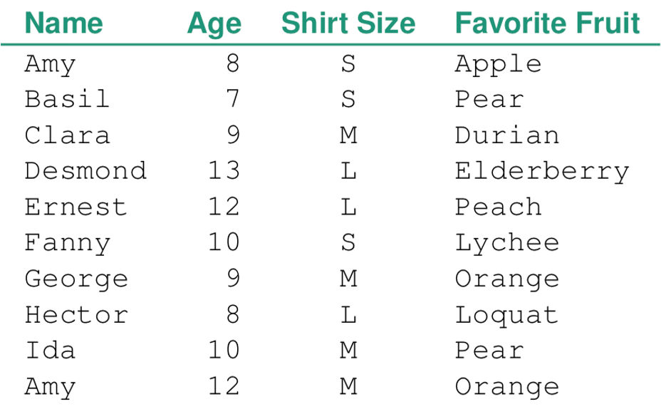
ITEM: Person
ATTRIBUTES: Name, Age, Shirt Size, Favorite Fruit
DATASET TYPES: TABLES
Flat Table
One ITEM per row
- often called an observation
Each column is an ATTRIBUTE
- often called a variable
A cell holds the VALUE for an item/attribute pair
A unique KEY can be used (implicitly or explicitly) to identify each item even if they share all measured attributes
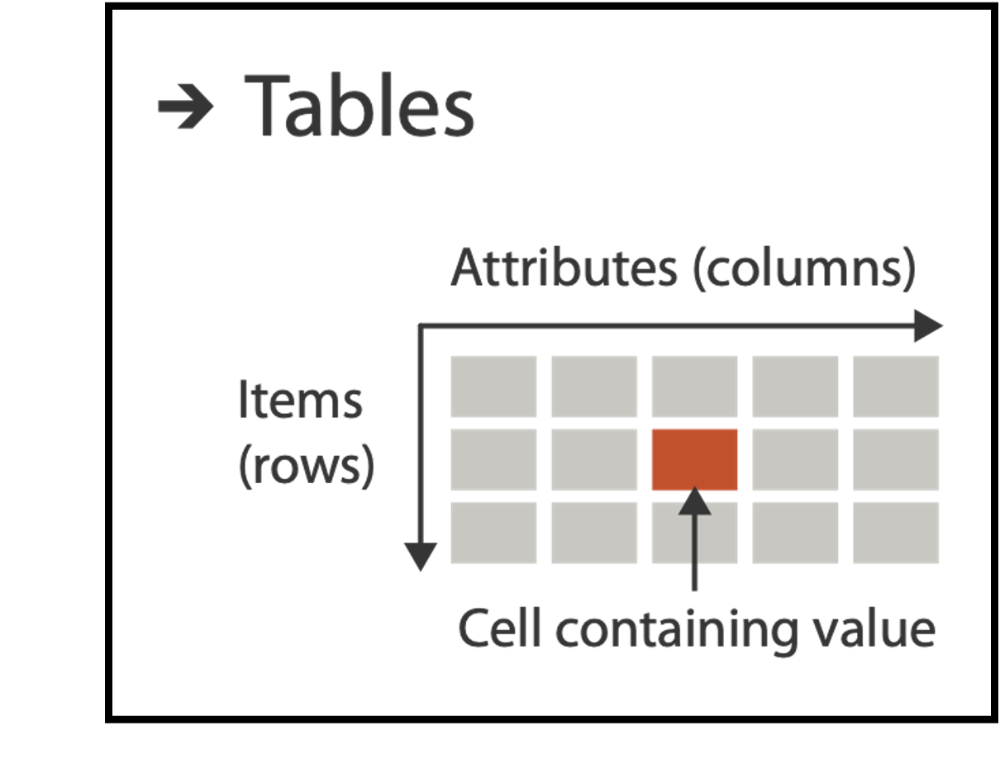
FLAT TABLE EXAMPLE
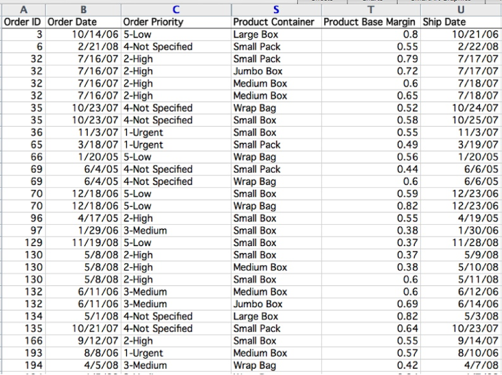

MULTIDIMENSIONAL TABLES
Indexing based on multiple keys (eg genes, patients)

KEYS AND VALUES
KEY: an independent attribute used as unique index to look up items.
Simple tables: 1 key
Multidimensional tables: multiple keys
Value: a dependent attribute, value of cell
We will classify visualization idioms by the number of keys used.
0, 1, 2, …

FRAMEWORK
IDIOM: Scatterplot
0 KEYS: Only values are available or salient to the task.
Express values (magnitudes) of quantitative attributes.
Data: 2 quantitative attributes
Mark: points
Channels: horizontal and verical position
Tasks: find trends, outliers, distribution, correlation, clusters
Scalability: hundreds of items
IDIOM: Scatterplot
0 KEYS: Only values are available or salient to the task.
Express values (magnitudes) of quantitative attributes.
Data: 2 quantitative attributes
Mark: points
Channels: horizontal and verical position
Tasks: find trends, outliers, distribution, correlation, clusters
Scalability: hundreds of items

SCATTERPLOTS: More channels
Additional channels are viable with scatterplots since we are using point marks.
Examples:
Color: But pay attention to Discriminability!
Size: But pay attention to using a quantitative attribute used to control 2D area. Directly encoding radius would mislead. Take the square root since area grows quadratically.
Shape:
SCATTERPLOT TASKS
Correlation
Clusters/groups, and clusters vs classes
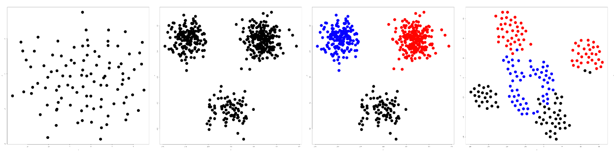
KEYS: Categorical Regions
- Regions: contiguous bounded areas distinct from each other
- NO OVERPLOTTING: separate into spatial regions: one mark per region (for now)
- use categorical or ordered attribute to separate into regions
- no conflict with expressiveness principle for categorical attributes
- use ordered attribute to order and align regions
Separated and aligned and ordered
Best case!
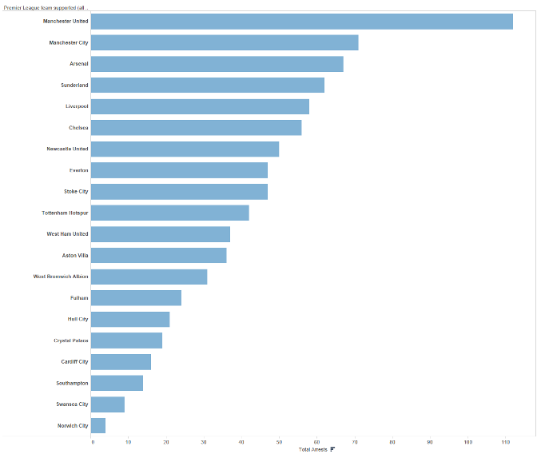
Separated/aligned - not ordered
Limitation: hard to know rank. what’s 4th? what’s 7th?
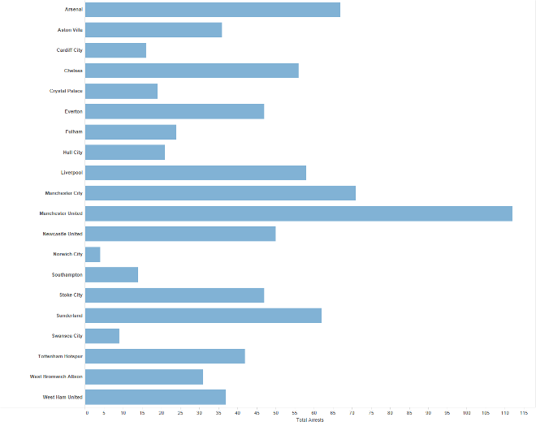
Separated but not aligned or ordered
Limitation: hard to make comparisons with size (vs aligned position)
IDIOM: Bar Chart
One key, One value
Data: 1 categorical attribute, 1 quantitative attribute
Mark: Lines
Channels: Length to express quantitative value
Spatial regions: one per mark - separated horizontally, aligned vertically. Ordered by quantitative attribute: by label (alphabetical), by length attribute (data-driven)
Tasks: compare, lookup values
Scalability: dozens to hundreds of levels for key attribute (bars), hundreds for values.
IDIOM: Stacked Bar Chart
Two keys, One value
Data: 2 categorical attribute, 1 quantitative attribute
Mark: vertical stack of line marks
Glyph: composite object, internal structure from multiple marks
Channels: length and color hue
Spatial regions: one per glyph
Aligned: full glyph, lowest bar component
Unaligned: other bar components
Task: part-to-whole relationship
Scalability: asymmetric for stacked key attrib, 10-12 levels segments for main key attrib, dozens to hundreds of levels bars
IDIOM: Streamgraph
Generalized stacked graph emphasizing horizontal continuity vs vertical items (example)
Data: 1 categ key attrib (movies) 1 ordered key attrib (time) 1 quant value attrib (counts) derived data geometry: layers, where height encodes counts 1 quant attrib (layer ordering)
Mark: vertical stack of line marks
Channels: length and color hue
Task: part-to-whole relationship
Scalability: hundreds of time keys dozens to hundreds of movies keys more than stacked bars: most layers don’t extend across whole chart
IDIOM: Dot/Line Chart
One key, One value
Data:2 quant attribs
Mark: points AND line connection marks between them
Channels: aligned lengths to express quant value separated and ordered by key attrib into horizontal regions
Task: find trend connection marks emphasize ordering of items along key axis by explicitly showing relationship between one item and the next
Scalability: hhundreds of key levels, hundreds of value levels

BAR vs LINE CHARTS
Choice depends on the type of key attributes.
Bar charts if categorical, Line charts if ordered. Do not use line charts for categorical key attributes as it violates the expressiveness principle. The implication of trend is so strong that it overrides semantics. “The more male a person is, the taller he/she is”
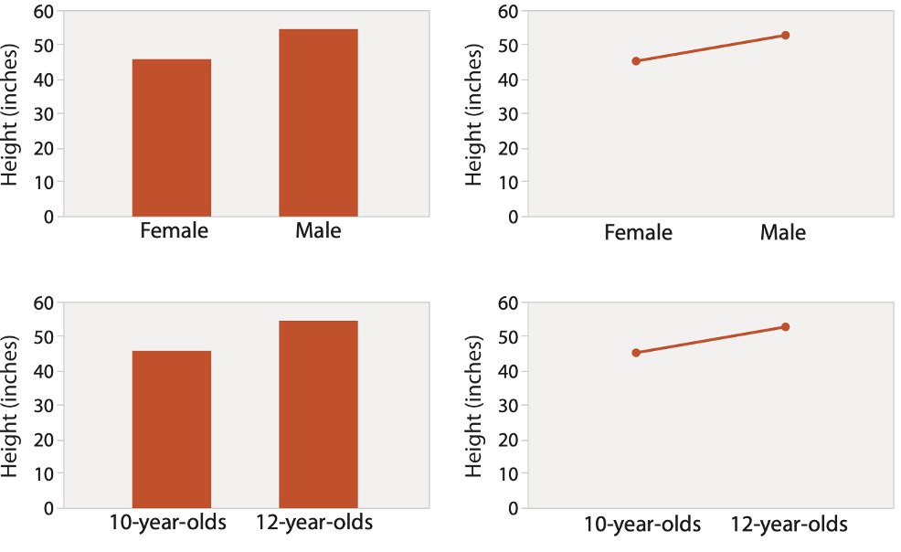
CHART AXES
Best practice to label axes, with few exceptions. Individual small multiple views could share axis label.
Include 0 at bottom left or the slope misleads. There are some exceptions (arbitrary 0, small change matters).
Truncating the Y-Axis: Threat or Menace? Correll, Bertini, & Franconeri, CHI 2020.
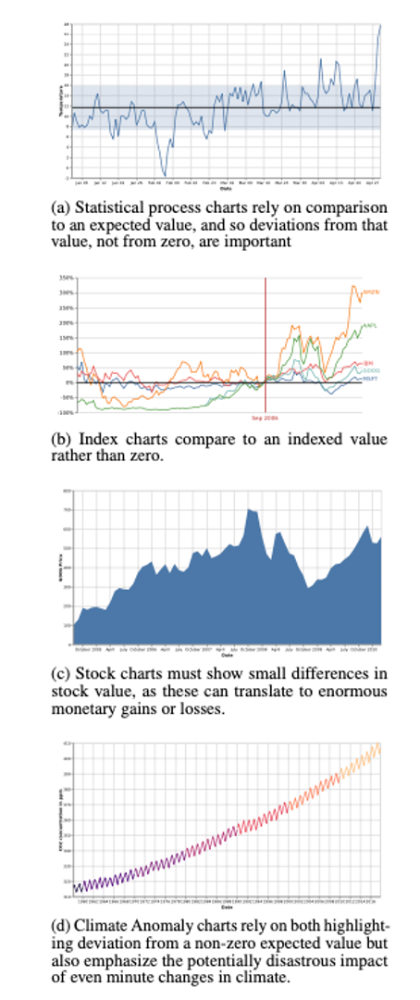
IDIOM: Indexed Line Charts
Data: 2 quant attribs 1 key + 1 value
Derived data: new quant value attrib index plot instead of original value
Task: show change over time
Principle: normalized, not absolute
Scalability: same as standard line chart
IDIOM: Gantt Charts
one key, two (related) values
Data: 1 categ attrib, 2 quant attribs
Mark: line length: duration
Channels: horiz position: start time (+end from duration)
Task: mphasize temporal overlaps & start/end dependencies between items
Scalability: dozens of key levels bars hundreds of value levels durations
IDIOM: Slopegraphs
two values
Data: 2 quant value attribs (1 derived attrib: change magnitude)
Mark: point + line line connecting mark between pts
Channels: 2 vertical pos: express attrib value (linewidth/size, color)
Task: emphasize changes in rank/value
Scalability: hundreds of value levels dozens of item
2 KEYS
IDIOM: Heatmap
two keys, one value
Data: 2 categ attribs (gene, experimental condition) 1 quant attrib (expression levels)
Mark: point separate and align in 2D matrix indexed by 2 categorical attributes
Channels: color by quant attrib (ordered diverging colormap)
Task: find clusters, outliers
Scalability: 1M items, 100s of categ levels, ~10 quant attrib levels
HEATMAP REORDERING
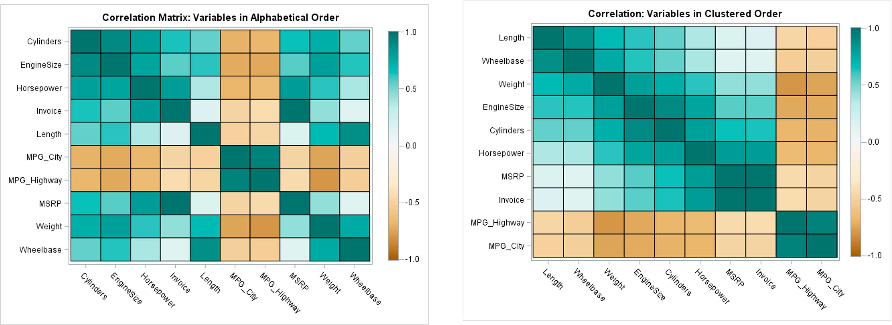
CLUSTERED HEATMAP
Use derived data: compute 2 cluster hierarchies and represent as a dendrogram. Parent-child relationships represented in tree with connection line marks, leaves aligned so interior branch heights are easy to compare. Heatmap marks are (re-)ordered by cluster hierarchy traversal. Task: assess quality of clusters found by automatic methods
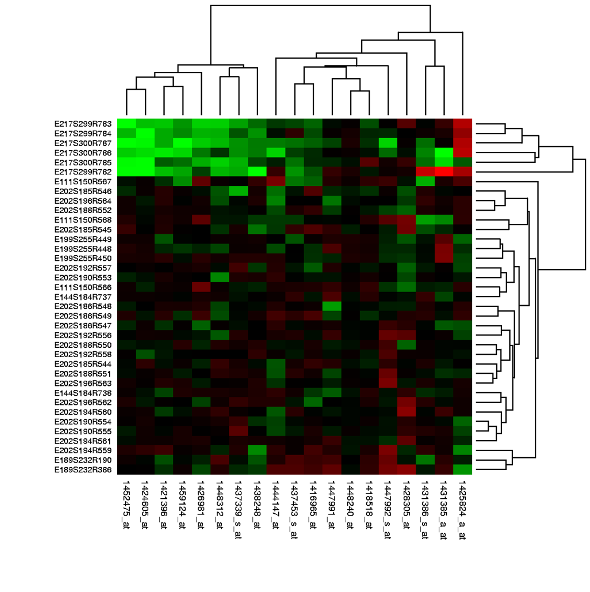
AXIS ORIENTATION
DISCUSS

RADIAL BAR CHART
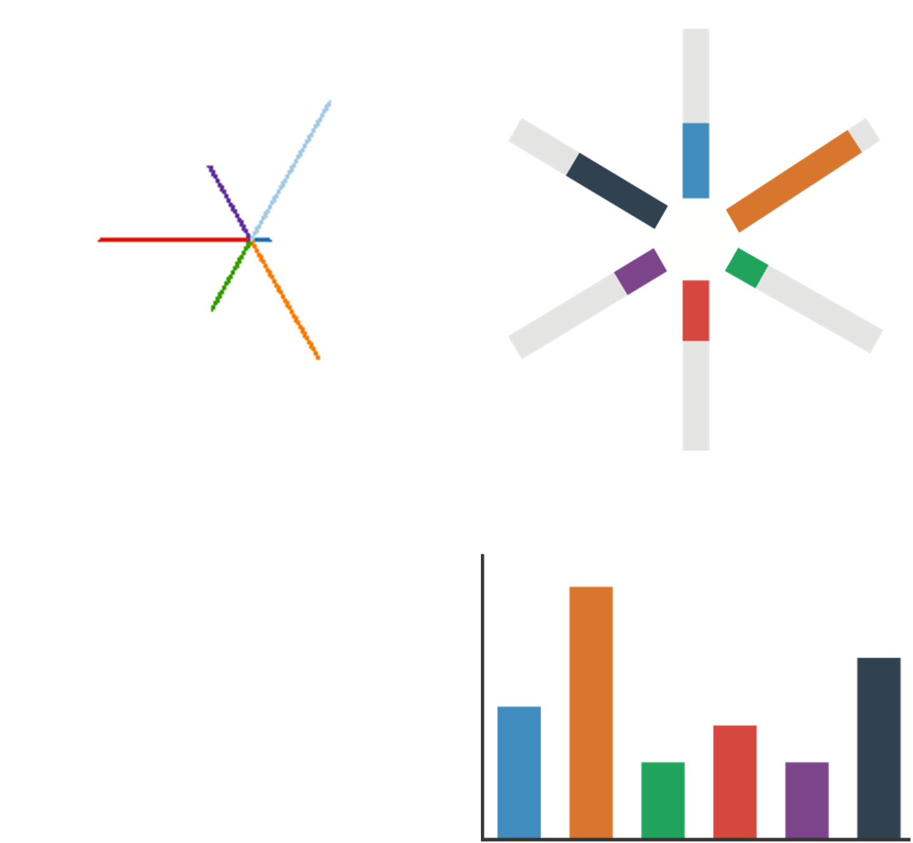
Star plot: line mark, radial axes meet at central point
Radial bar chart: line mark, radial axes meet at central ring
Channels: length, angle/orientation
Bar chart: rectilinear axes, aligned vertically
Accuracy: length not aligned with radial layouts, making them less accurately perceived than rectilinear aligned layouts.
Vismon: Facilitating Risk Assessment and Decision Making In Fisheries Management. Booshehrian, Möller, Peterman, and Munzner. Technical Report TR 2011-04, Simon Fraser University, School of Computing Science, 2011.
RADAR PLOT
Radial line chart with point marks, radial layout, and connecting line marks. Avoid unless data are cyclic.
RADAR PLOT EXAMPLE

PIE AND COXCOMB CHARTS
1 categorical key attribute, 1 quantitative value attribute
Pie chart: interlocking area marks with angle channel causes variation in 2D area. Keys are separated & ordered radially with uniform height. accuracy: area less accurate than rectilinear aligned line length.
Task: part-to-whole judgements.
Coxcomb chart: line marks with length channel, creating variation in only 1D length. Keys are separated & ordered radially with uniform width. These charts are a direct analog to radial bar charts.
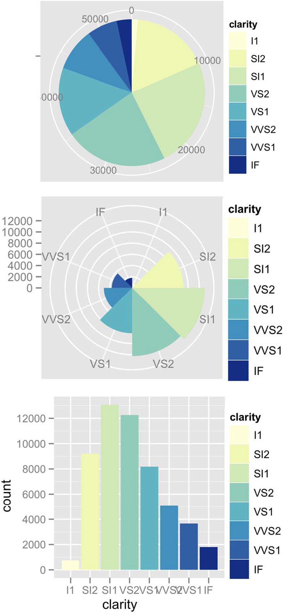
NIGHTENGALE ROSE
Coxcomb / Nightengale Rose/ Polar Area Chart Invented by Florence Nightingale.
COXCOMB: Perception
Encode: 1D length
Decode/perceive: 2D area
The nonuniform relationship between line/sector width and mark length causes area variation to scale nonlinearly with line mark length!
A standard bar chart is safer: bars are uniform width, so area is linear with line mark length in both radial & rectilinear cases.
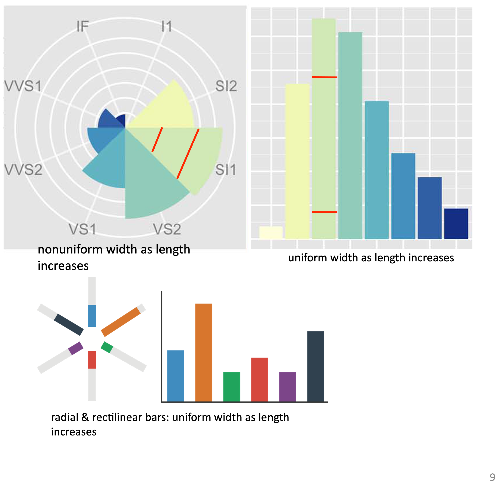
PIE CHARTS: Perception
Some empirical evidence that people respond to arc length.
Decode/perceive: arc length, maybe also areas, but not angles.
Donut charts are no worse than pie charts.

Arcs, Angles, or Areas: Individual Data Encodings in Pie and Donut Charts. Skau and Kosara. Proc. EuroVis 2016
PIE CHARTS: Best Practices
Not so bad for two (or few) levels and part-to-whole tasks. Dubious for several levels if details matter. Terrible for many levels.
NORMALIZED STACKED BAR
Task: part-to-whole judgements
Normalized stacked bar chart: stacked bar chart, normalized to full vertical height. A single stacked bar is equivalent to a full pie chart.
High information density can be achieved with narrow rectangles. Pie chart information density is much more limited and requires a large circle.
GLYPHMAPS
Rectilinear glyphs are good for linear vs nonlinear trends. Radial glyphs are good for cyclic patterns and evaluating periodicity.
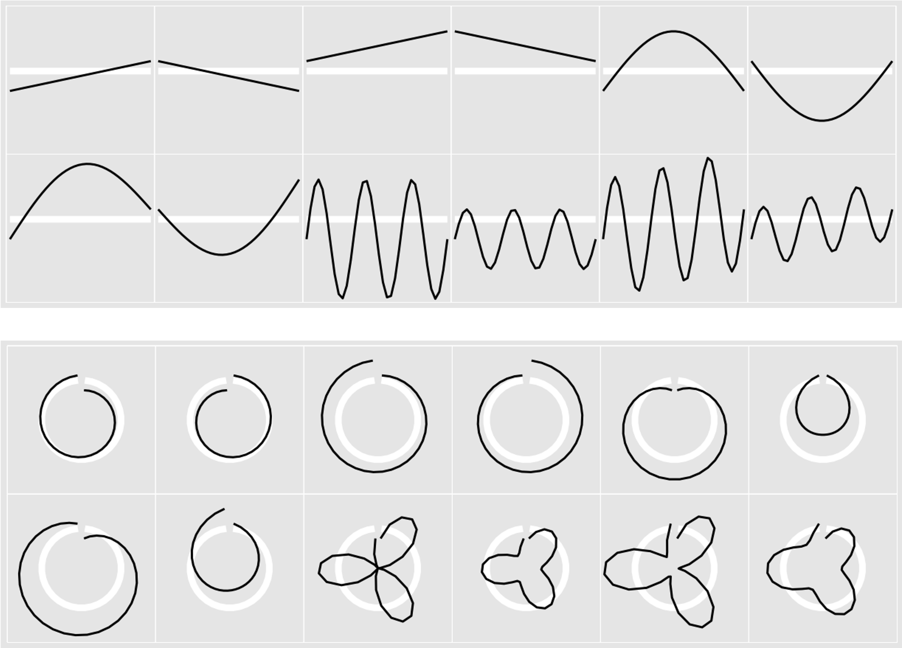
Glyph-maps for Visually Exploring Temporal Patterns in Climate Data and Models. Wickham, Hofmann, Wickham, and Cook. Environmetrics 23:5 (2012), 382–393.
PARALLEL AXES

SPLOM
Scatterplot matrix (SPLOM): Rectilinear axes with point mark. All possible pairs of axes are visualized.
Scalability: about a dozen attributes and dozens to hundreds of items.
PARALLEL COORDINATES
Scatterplot limitation: visual representation with orthogonal axes can show only two attributes with spatial position channel.
PARALLEL COORDINATES
Alternative: Line up axes in parallel to show many attributes with position. Items are encoded with a line with n segments (n is the number of attributes shown). Ordering is a major challenge.
Scalability: dozens of attributes and hundreds of items.
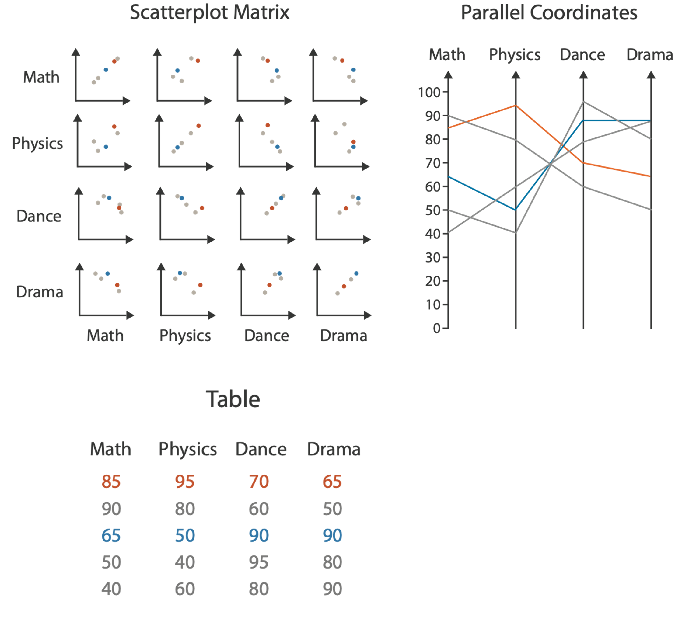
PARALLEL COORDINATES: Limitations
Patterns only visible between neighboring axis pairs. How to pick axis order? The usual solution is reorderable axes and interactive exploration. The downside of interaction is human-powered search.
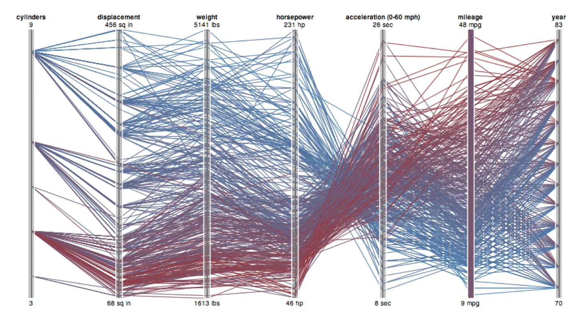
As usual, OBSERVABLE really shines for these types of interactive plots!
ORIENTATION LIMITATIONS
Rectilinear: Scalability is limited with regard to the number of axes. (2 axes best, 3 problematic, 4+ impossible.)
Parallel: Unfamiliarity and training time.
Radial: Perceptual limits include polar coordinate asymmetry, lower precision with angle channles compated to length channels, nonuniform sector width/size depending on radial distance. While thes limits are frequently problematic, they can sometimes be deliberately exploited. (Example: for 2 attribs of very unequal importance)
Uncovering Strengths and Weaknesses of Radial Visualizations - an Empirical Approach. Diehl, Beck and Burch. IEEE TVCG (Proc. InfoVis) 16(6):935–942, 2010.
CHART AXES
Labelled axes are critical! Avoid cropping the y-axis (include 0 at bottom left) or the slope misleads the viewer.
DUAL AXIS LINE CHARTS
This approach is controversial. Dual axes are acceptable if they are commensurate, but beware, as they make it very easy to mislead!
CONNECTED SCATTERPLOTS
Scatterplot with line connection marks. These are popular in journalism.
Horiz + vert axes: value attributes
Line connection marks: temporal order
Alternative to dual-axis charts (horiz: time vert: two value attributes).
empirical study suggests these are engaging, but correlations are unclear.
http://steveharoz.com/research/connected_scatterplot/
BREAKING CONVENTIONS
The inverted y axis is evocative of blood dripping down on Poe.
https://public.tableau.com/profile/ben.jones#!/vizhome/EdgarAllanPoeViz/EdgarAllanPoeViz
ARRANGING TABULAR DATA
What did we miss?